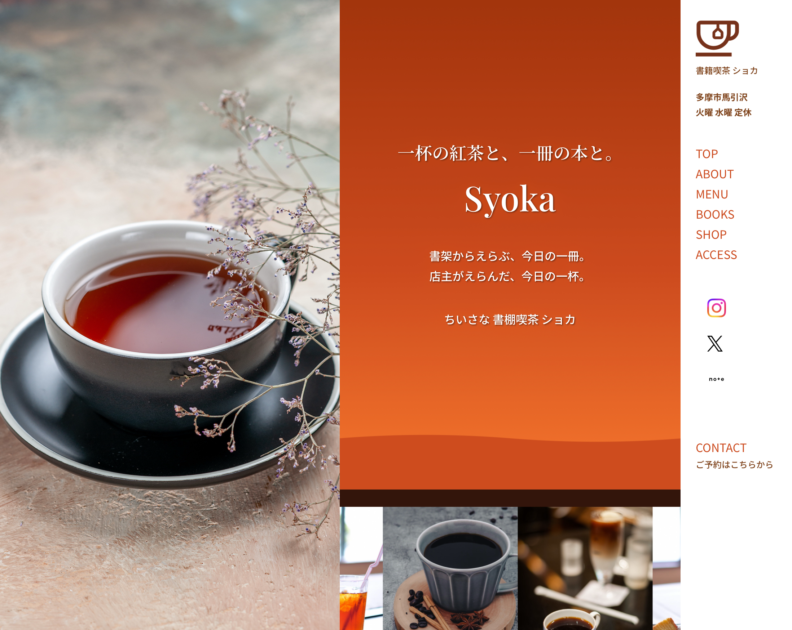
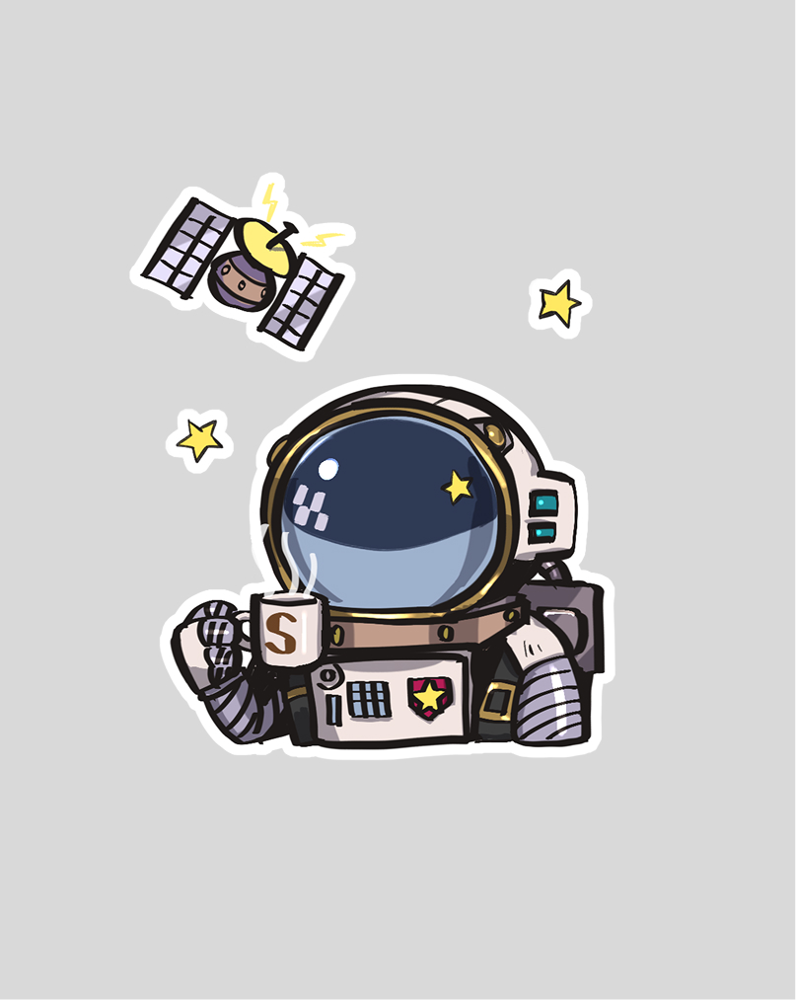
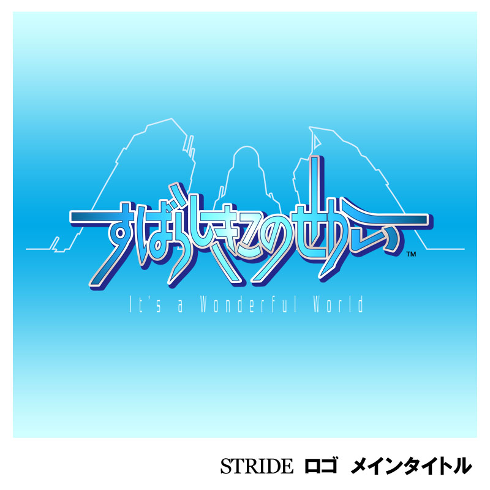

02
WORKS
制作実績

WEB DESIGN
喫茶ショカ Webページ
2026年 / モバイルファースト設計

LOGO / GRAPHIC DESIGN
カフェSORA ロゴ・キャラクター
2025年 / ブランディング・ノベルティ展開

GAME / LOGO DESIGN
すばらしきこのせかい
2006年 / スクウェア・エニックス

GAME / CONCEPT ART
ファイナルファンタジーIX
1998-2000年 / 2Dセクションリーダー
— 主な参加ゲームタイトル
聖剣伝説２
キャラクターデザイン・UI
クロノトリガー
フィールドデザイン・UI
パラサイトイヴ
バトルエフェクトディレクター・UI
ファイナルファンタジーIX
フィールドアートデザイン・2Dリーダー
キングダムハーツ チェイン オブ メモリーズ
アートスーパーバイザー・外注管理
すばらしきこのせかい
キャラクターグラフィックスーパーバイザー
FFクリスタルクロニクル エコーズ・オブ・タイム
フィールドアート・ボスデザイン
ディライズ（株式会社enish）
背景コンセプトアート・モンスターデザイン
ピクセルリマスター FF3
ピクセルアート各種